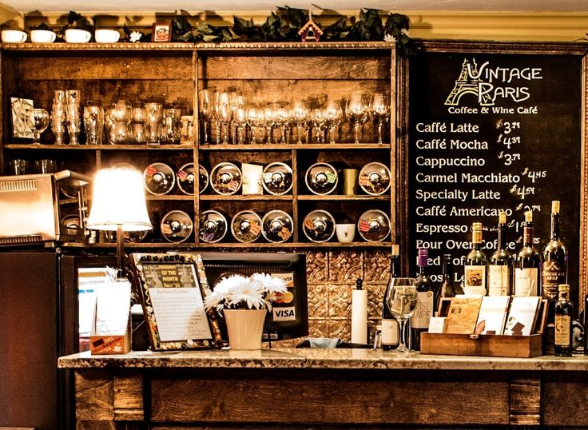
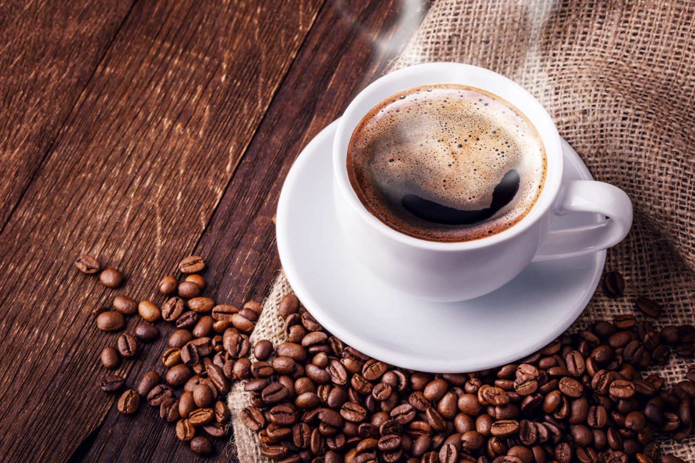

The History of Coffee
Coffee is a brewed drink prepared from roasted coffee beans, which are the seeds of berries from the Coffea plant. The genus Coffea is native to tropical Africa (specifically having its origin in Ethiopia and Sudan) and Madagascar, the Comoros, Mauritius, and Réunion in the Indian Ocean. The plant was exported from Africa to Arabia and to countries around the world. Coffee plants are now cultivated in over 70 countries, primarily in the equatorial regions of the Americas, Southeast Asia, India, and Africa. The two most commonly grown are the highly regarded arabica, and the less sophisticated but stronger and hardier robusta. Once ripe, coffee berries are picked, processed, and dried. Dried coffee seeds (referred to as beans) are roasted to varying degrees, depending on the desired flavor. Roasted beans are ground and brewed with near-boiling water to produce coffee as a beverage.
Coffee is slightly acidic and can have a stimulating effect on humans because of its caffeine content. Coffee is one of the most popular drinks in the world. It can be prepared and presented in a variety of ways (e.g., espresso, French press, cafe latte, etc.). It is usually served hot, although iced coffee is an alternative way of the drink to be served. Clinical studies indicate that moderate coffee consumption is benign or mildly beneficial in healthy adults, with continuing research on whether long-term consumption inhibits cognitive decline during aging or lowers the risk of some forms of cancer.
 The earliest credible evidence of coffee-drinking appears in Yemen in southern Arabia in the middle of the 15th century in Sufi shrines. It was here in Arabia that coffee seeds were first roasted and brewed in a similar way to how it is now prepared. Coffee seeds were first exported from East Africa to Yemen, as the coffea arabica plant is thought to have been indigenous to the former. Yemeni traders took coffee back to their homeland and began to cultivate the seed. By the 16th century, it had reached Persia, Turkey, and North Africa. From there, it spread to Europe and the rest of the world.
Coffee is a major export commodity: it is the top agricultural export for numerous countries and is among the world's largest legal agricultural exports. It is one of the most valuable commodities exported by developing countries. Green (unroasted) coffee is one of the most traded agricultural commodities in the world. Some controversy is associated with coffee cultivation and the way developed countries trade with developing nations and the impact of its cultivation on the environment, in regards to the clearing of land for coffee-growing and water use. Consequently, the markets for fair trade coffee and organic coffee are expanding.
All credit to: Wikipedia